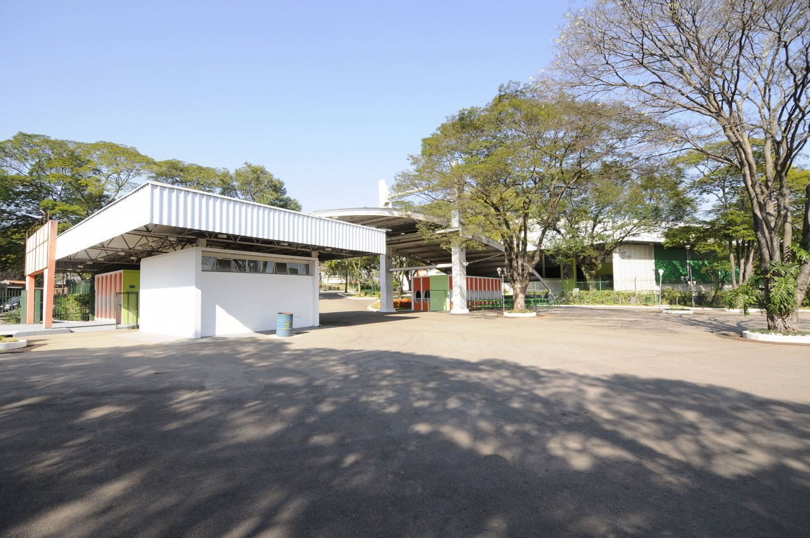

PARQUE DA UVA
O Parque da Uva é conhecido pela realização de grandes eventos, como a Festa da Uva, a Feira da Amizade, shows, apresentações culturais, entre outros. Inaugurado em 1953 e reestruturado em 2004, o local conta com internet Wi-Fi gratuita para seus visitantes, espaços arborizados, estacionamento gratuito e aparelhos de ginástica ao ar livre.
- Endereço: Av. Jundiaí, s/n – Anhangabaú
- Telefone: (11) 4521-6837
- Horário de Funcionamento: Devido a pandemia do novo coronavírus o parque permanece temporariamente fechado ao público.
MUNDO DAS CRIANÇAS
O Parque da Uva está localizado no Endereço: Av. Jundiaí, s/n – Anhangabaú.